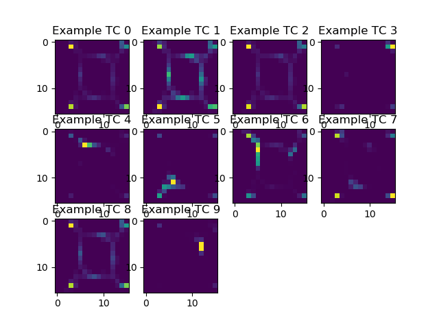
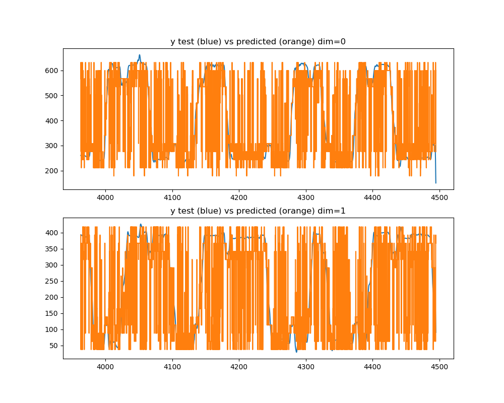
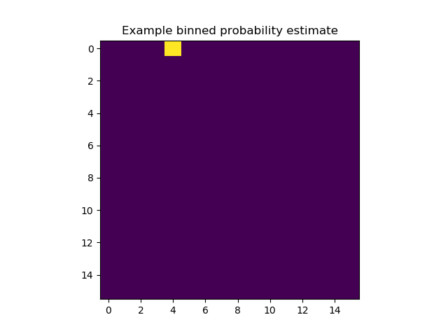

Note
Click here to download the full example code
Decoding binned probabilties from firing rates with naive bayes inversion of poisson tuning curves¶
Tuning curves are calculated per feature creating an expected firing rate across per neuron across the range of the stimulus data. This model is assumed to be poisson and then inverted and compared to the true firing rate of the neuron in the test set to predict the stimulus.
Preprocessing¶
- Time is binned over the range of the data
2. Spike times and associated cell-ids are used to construct a firing-rate matrix which is not normalized to the cells firing rate to keep it as count data needed for a poisson model 3. Stimulus values are retrieved at the spike times 4. Variables are split into independent training and test sets
Estimation¶
- A poisson model is constructed
- Predictions are given as a probability over the range of the data at each time
Plotting¶
The tuning curves given by the training data are displayed. The maximum-likelihood predictions given by the chosen model are compared to the true position.
- 
- 
- 
import numpy as np
import matplotlib.pyplot as plt
from sklearn.preprocessing import StandardScaler
from sklearn.model_selection import train_test_split
from sklearn.pipeline import make_pipeline
from mlneuro.regression import PoissonBayesianRegressor
from mlneuro.multisignal import multi_to_single_signal
from mlneuro.preprocessing.signals import process_clustered_signal_data
from mlneuro.preprocessing.stimulus import stimulus_at_times, smooth_stimulus
from mlneuro.utils.io import load_array_dict
from mlneuro.utils.visuals import n_subplot_grid
from mlneuro.common.bins import binned_data
from mlneuro.filtering import TransitionInformedBayesian, filter_at
DISPLAY_PLOTS = True # Plot the predicted value in each dimension
DISPLAY_TUNING_CURVES = True
SAVE_TO_FILE = None
STIMULUS_BINS = 16
RESOLUTION = 0.05
# Load data
from mlneuro.datasets import load_restaurant_row
data = load_restaurant_row()
# Clean up stimulus data
stimulus_times = data['full_stimulus_times']
stimulus_data = data['full_stimulus']
stimulus_data = smooth_stimulus(stimulus_times, stimulus_data)
# stimulus_data -= np.mean(stimulus_data, axis=0)[np.newaxis, :]
# Convert to a single signal
# Ensure unique cell ids
# Bin time, get firing rates with history in previous bins
# Notice firing rates are unnormalized which means its just spike counts
T, X = process_clustered_signal_data(data['signal_times'], data['signal_cellids'],
temporal_bin_size=RESOLUTION,
bins_before=5,
bins_after=5,
flatten_history=False,
normalize_by_max_rate=False,
normalize_by_bin_size=False)
# Sum over the history to get a per neuron spike count over that whole time range
X = np.sum(X, axis=1)
# Discard neurons with a mean firing rate outside bounds
# spikes_second = X.sum(axis=0) / (T.max() - T.min()) / 6
# X = X[:, spikes_second < 200]
pipeline = PoissonBayesianRegressor(ybins=STIMULUS_BINS, n_jobs=-1, use_prior=False)
y = stimulus_at_times(stimulus_times, stimulus_data, T)
# Split the data, not shuffling so that the displayed plot will be over a small range
X_train, X_test, T_train, T_test, y_train, y_test = train_test_split(X, T, y, test_size=0.15, shuffle=False)
# Fit the model
pipeline.fit(X_train, y_train)
if DISPLAY_TUNING_CURVES:
fig, axes = n_subplot_grid(min(X.shape[1], 10))
for i, ax in enumerate(axes):
axes[i].imshow(pipeline.tuning_curves[i].reshape(STIMULUS_BINS, STIMULUS_BINS))
axes[i].set_title('Example TC {}'.format(i))
fig.show()
# Predict probabilities
y_pred = pipeline.predict_proba(X_test)
# Already single signal but this will sort the arrays quickly
T_test, (y_pred, y_test) = multi_to_single_signal([T_test], [y_pred], [y_test])
# Normalize to a probability distribution
y_pred /= np.nansum(y_pred, axis=1)[:, np.newaxis]
ybin_grid = pipeline.ybin_grid
y_predicted = ybin_grid[np.argmax(y_pred, axis=1)]
if DISPLAY_PLOTS:
fig, axes = n_subplot_grid(y_predicted.shape[1], max_horizontal=1, figsize=(10,8))
for dim, ax in enumerate(axes):
ax.plot(T_test, y_test[:, dim])
ax.plot(T_test, y_predicted[:, dim])
# ax.plot(T_test, y_predicted_filt[:, dim])
ax.set_title('y test (blue) vs predicted (orange) dim={}'.format(dim))
fig.show()
plt.figure()
plt.imshow(y_pred[55,:].reshape(STIMULUS_BINS, STIMULUS_BINS))
plt.title('Example binned probability estimate')
plt.show()
if SAVE_TO_FILE is not None:
from mlneuro.utils.io import save_array_dict
save_array_dict(SAVE_TO_FILE,
{'times': T_test, 'estimates': y_pred.reshape(-1, STIMULUS_BINS, STIMULUS_BINS), 'max_estimate': y_predicted, 'bin_centers': pipeline.ybin_centers, 'test_stimulus': y_test},
save_type='mat')
Total running time of the script: ( 0 minutes 7.575 seconds)